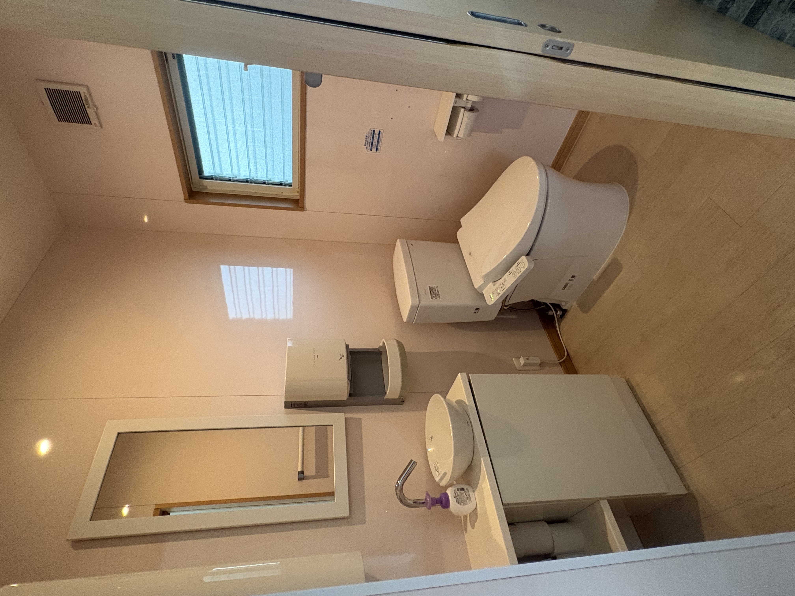
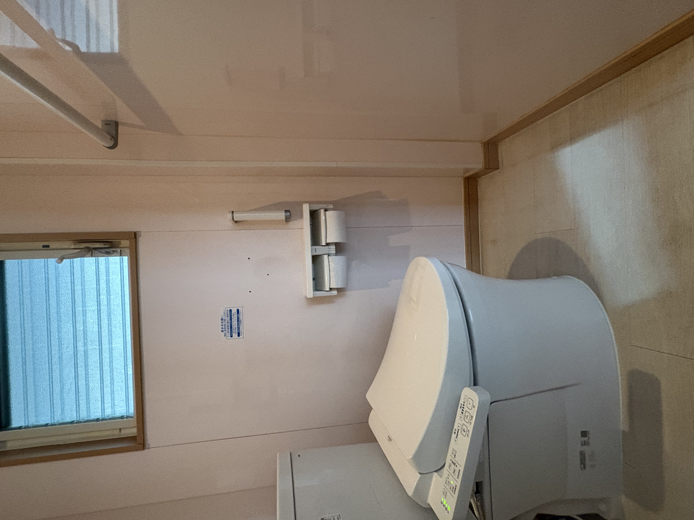
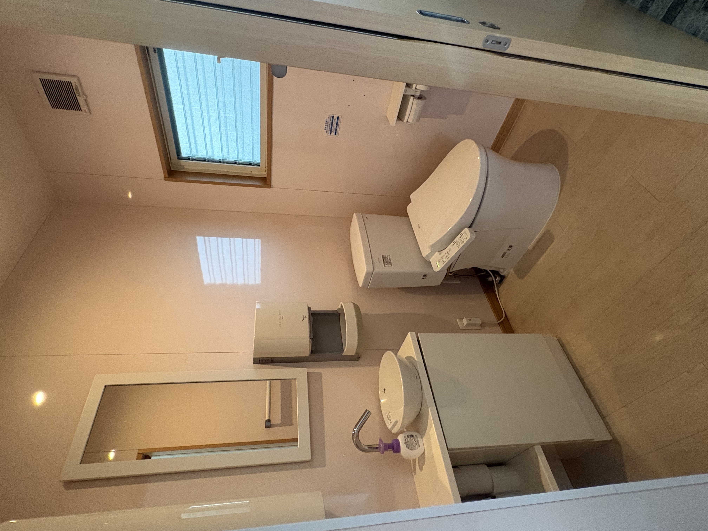
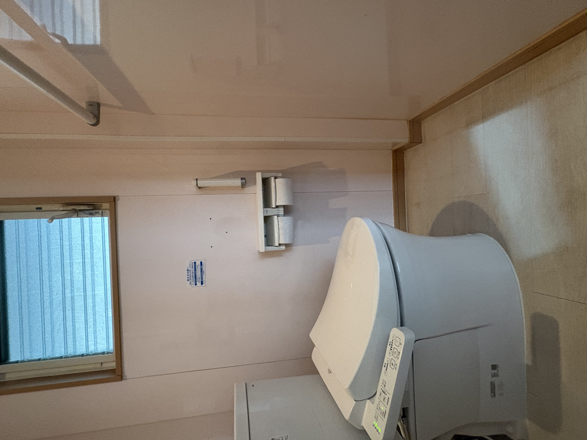

どんな重い障がいや医療的ケアがあっても
子どもには子ども同士のつながりがある。
お友達と心躍る“ほっぷ”な気持ちで、
次の“すてっぷ”に向けた成長と発達を🌸
「ご家族も安心して趣味や買い物の時間を過ごすことができる」
毎日の笑顔につながる支援を目指していきます。
お友達と心躍る“ほっぷ”な気持ちで、
次の“すてっぷ”に向けた成長と発達を🌸
定員７名の超小規模で徹底したケア体制
少人数体制により、スタッフが一人ひとりと丁寧に向き合い、マンツーマンに近い療育支援を行っています。
専門スタッフによる安心・安全な療育
看護師・保健師・児童発達支援管理責任者・児童指導員など、経験豊富なスタッフがチームを組み、医療的・発達的な両面から支援します。
療法士による個別リハビリプログラム
理学療法士が作成した個別リハビリをもとに、日々の活動の中で無理なく取り組みます。お子さんの可能性を広げていきます。
夏休みや長期休暇を活用した課外活動
ほっぷ＆すてっぷでは、長期休暇を利用してさまざまな外出活動を行っています。
福祉車両による安心の送迎
バギーや車椅子のまま乗車できる福祉車両を完備。
ご希望に応じて、ご自宅までの個別送迎にも対応しています。
地域と連携した総合サポート
発達のご相談など、児童発達支援管理責任者や保健師がサポートします。支援員や地域の保健センター等と連携をとりながら就学後も持続的に支援を行います。
医療的ケアにおいては、土浦協同病院・悠有会すずきクリニックと連携をとり、看護師や療法士が日々の体調をサポートします。主治医の指示書と処方箋に基づき、経験豊富なスタッフが丁寧な医療的ケアを行います。
| 時間 | 内容 |
|---|---|
| 9:30 | 送迎 |
| 10:00 | 到着・水分補給・トイレ・健康チェック・出席確認 |
| 10:15 | 朝の会（ごあいさつ・お歌）／制作活動・レクリエーション |
| 12:00 | お昼（経管栄養やお弁当・歯磨き・片付け) |
| 13:00 | 帰りの会 |
| 13:15 | 送迎バスまたは保護者様のお迎え |
※上記時間外のご利用に関してはご相談下さい
| 時間 | 内容 |
|---|---|
| 14:00 | 送迎（学校までお迎えに行きます） |
| 15:00 | 水分補給・健康チェック・出席確認／制作活動・レクリエーション |
| 16:15 | 帰りの会・連絡帳記入 |
| 16:30 | 送迎車または保護者様のお迎え |
※上記時間外のご利用に関してはご相談下さい
| 時間 | 内容 |
|---|---|
| 9:30 | 送迎 |
| 10:15 | 到着・健康チェック |
| 10:30 | 始まりの会 |
| 10:40 | 集団プログラム＆自由時間 |
| 12:00 | お昼（経管栄養やお弁当・歯磨き・片付け） |
| 13:00 | 集団レク or 個別プログラム |
| 15:15 | 帰りの会・連絡帳記入 |
| 15:30 | 送迎車または保護者様のお迎え |
※上記時間外のご利用に関してはご相談下さい
全体プログラムの一例
医療的ケアは、下記の内容において主治医の指示書を基に保護者からの依頼と同意に基づいて、看護師及び医療的ケアの研修を受けた介護士が実施いたします。
ほっぷ＆すてっぷでは、重症心身障がい児の就学中のお子様を対象にサービスを提供しています。ご利用にあたっては、事前に重心認定を受けていただく必要があります。 （重症心身障がい児以外でも、重心児スコアで超重症児・準超重症児に該当されるお子様も対象です。） ※放課後等デイサービスの通所受給者証をお持ちの方も対象となります。
通所受給者証をお持ちの方は、証明書をご持参のうえご来所ください。ご契約後、利用日数に応じてすぐにご利用いただけます。 スタッフが丁寧にヒアリングを行い、お子様に合わせた支援計画を作成し、ご家庭と連携しながら最適な療育をご提案いたします。
放課後等デイサービスをご利用いただくには、「通所受給者証」が必要です。お住まいの市役所（福祉課）にて、放課後等デイサービス利用の申請手続きを行ってください。 支給が決定すると通所受給者証が発行され、その後すぐにサービスをご利用いただけます。
ご不明な点や手続き方法については、スタッフがサポートいたしますのでお気軽にご相談ください。
子どもたちの「らしさ」を尊重し、ご家族の「安心」を支えるために、専門スタッフがチームでサポートします。
床はフルフラットのバリアフリー設計で、経管栄養物品や医療用ベッド・吸引器等の医療ケア設備を常備しております。
清潔で安心できる空間づくりを心がけています。いつでも見学お待ちしております。

 




〒300-0341
茨城県稲敷郡阿見町うずら野4-3-5 ラ・プランシェ阿見110号室
TEL：090-9357-4100
最寄り駅：荒川沖駅から徒歩約10分
お問い合わせは以下のメールまたはお電話にて承っております。
📞 090-9357-4100
✨️2025年12月1日オープン予定✨️